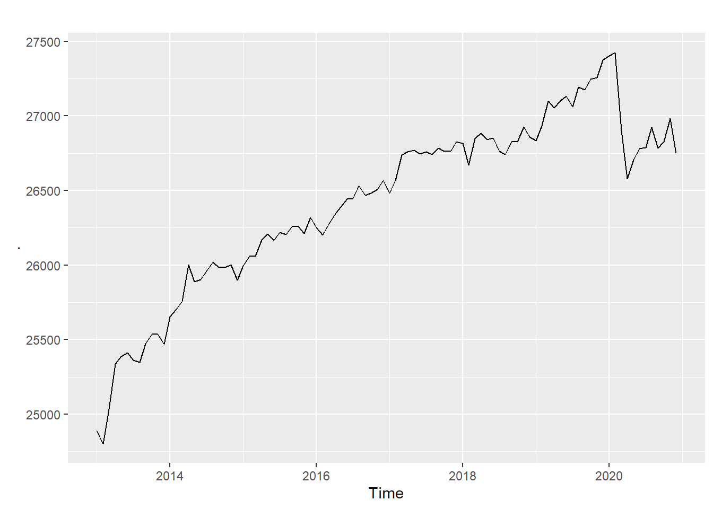

5.8 계절성 검정
앞에서는 정상성을 테스트하기 위한 방법을 살펴보았다. 그렇다면 계절성이 있는지 없는지는 어떻게 알수 있을까? 이에 대한 검정 방법도 존재한다.
계절성 검정을 위해 많이 사용되는 방법이 WO(Webel-Ollech) 테스트이다. seastests 패키지에서 제공하는 함수로 QS-test와 kwman-test를 혼합하여 계절성을 판단한다. wo()는 qs()의 p value가 0.01보다 작거나 kw()이 결과가 0.002보다 작다면 계절성이 있다고 판단한다.
wo()는 앞선 ur.kpss()나 box.test()와는 달리 명확하게 계절성이 있는지 없는지를 알려준다.(ur.kpss()나 box.test()도 이렇게 해주면 얼마나 좋을까.맨날 헤깔린다.)
library(seastests)
### 총학생수계는 년별 데이터이므로 계절성이 존재할수 없다.
summary(wo(students.ts[,2]))## Test used: WO
##
## Test statistic: 0
## P-value: 1.229555e-07 1 1
##
## The WO - test does not identify seasonality### 총 취업자수는 계절성이 존재하는지 검사
summary(wo(employees.ts[,2]))## Test used: WO
##
## Test statistic: 1
## P-value: 0 1.199041e-14 2.346908e-06
##
## The WO - test identifies seasonalityforecast::nsdiffs(employees.ts[,2]) ### seasonality를 제거하기 위해 필요한 차분수## [1] 1### 교육서비스업 취업자 수의 계절성 검사
summary(wo(employees.ts[,3]))## Test used: WO
##
## Test statistic: 0
## P-value: 0.1976637 0.1976739 0.006082959
##
## The WO - test does not identify seasonality위에서 살펴본 계절성은 데이터의 해석에 방해되는 경우들이 있다.
예를 들자면 우리는 지금 지구온난화의 시대에 살고 있다고 한다. 지구의 평균 온도가 계속 올라가고 있다고 한다. 그런데 우리의 데이터는 여름엔 기온이 올라가고 겨울엔 기온이 떨어지기를 반복한다. 이 패턴을 자세히 보면 추세를 볼수 있을테니 전반적으로 올라가거나 떨어지는 것을 확인할 수 있을 것이다. 하지만 지난 여름보다 올 여름은 얼마나 올라갔으며 지난 겨울보다 올 겨울은 얼마나 떨어진 것일까? 이러한 분석을 하기 위해서는 여름의 기온 상승과 겨울의 기온 하락 계절성은 다소 방해적 요소임에는 확실하다.
또 하나의 예로 지금까지 우리가 계속 그려온 전체 취업자를 생각해보자. 취업자 plot에서 봐서 알겠지만 겨울에 떨어졌던 취업자는 3월부터 회복을 시작하여 여름 휴가철에 잠깐 떨어졌다. 겨울이 들어면서 다시 떨어졌다. 하지만 전반적인 추세는 올라가고 있는 것을 볼 수 있다. 그렇다면 월별로 얼마나 올라고 있는 것일까? 겨울에 떨어졌다가 여름에 올라가는 것을 감안한다하더라도 지속적으로 올라가는 것일까? 혹시 예외추세는 없을까? 이런 질문에 지금까지의 취업자 시계열 plot은 잘 대답할 수 있을까?
답할 수 없다면 계절성을 빼고 데이터를 살펴보자. 그러면 질문의 답이 될 것이다.
forecast 패키지에서는 이렇게 계절성을 제거하는 seasadj()를 제공한다. seasadj()를 사용하면 계절성이 제거된 데이터를 산출해주고 이에 대한 plot을 그리면 계절성이 제거된 데이터를 확인하기가 편리하다.
아래의 plot이 총취업자수 데이터에서 계절성을 제거한 plot을 보여준다. 2013년 이후로 우리나라의 취업자수는 전반적으로 증가하고 있는 것이 확실히 보인다. 겨울에 줄어들었다 봄부터 늘어나는 계절성을 뺀다해도 계속 증가 추세이다. 다만 plot 뒤쪽에 보이는 급격한 하락의 시작점은 2020년 2월이다. 이때가 코로나19의 시작이었다.
library(forecast)
employees.ts[,2] %>% decompose() %>% seasadj() %>% autoplot()
그렇다면 반대로 계절성을 확실하게 보고싶을땐 어떻게 할까? 예를 들어 앞의 취업자수의 계절성이 정말로 매년 반복되는지 그 차이는 얼마나 되는지를 정확히 살펴보고 싶으면 어떤 plot을 그려야 할까?
이 경우에도 forecast 패키지에서 제공하는 함수를 사용하면 간단히 해결된다.
ggseasonplot()과 ggsubseriesplot()을 사용할 수 있는데 ggseasonplot()은 시계열 데이터를 연도별로 그룹핑하여 월별 라인 plot을 그려주고 ggsubseriesplot()은 월별로 그룹핑하여 연도별 라인 plot을 그려준다.
ggseasonplot(employees.ts[,2], main = '연도별 월간 plot', ylab = '취업자수', xlab = '월', year.labels = T)ggsubseriesplot(employees.ts[,2], main = '월별 연간 plot', ylab = '취업자수', xlab = '월')